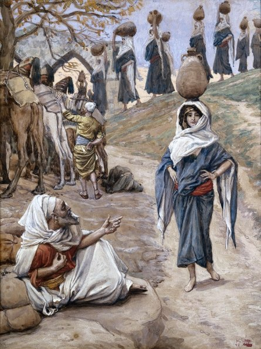

Called to Create
Ephraim Kalish
The first person Scripture describes as filled with the Spirit of God was an artist, Bezalel (Exod 31:2–3). TORAART explores what the Bible says about creative work and creative people: art midrashim, the biblical feasts, Hebrew words, artifacts, galleries and films by Ephraim Kalish.
New on the Site

The Bible and the ArtistAncient and Authentic: How Artists Have Tried to Picture the Bible’s World The Bible and the ArtistThe Artist as Interpreter: Illustration as a Way of Studying Scripture
The Bible and the ArtistThe Artist as Interpreter: Illustration as a Way of Studying Scripture The Feasts of the LORDThe Power of Joy
The Feasts of the LORDThe Power of Joy Art MidrashJUBAL: THE FATHER OF ALL MUSICIANS
Art MidrashJUBAL: THE FATHER OF ALL MUSICIANS Art MidrashWho Is Yuval?
Art MidrashWho Is Yuval? Art MidrashWho Is Bezalel?
Art MidrashWho Is Bezalel?Articles
 Art MidrashReading Scripture through creative work40 articlesNew: JUBAL: THE FATHER OF ALL MUSICIANS
Art MidrashReading Scripture through creative work40 articlesNew: JUBAL: THE FATHER OF ALL MUSICIANS The Bible and the ArtistFaith and calling in the lives of artists, past and present48 articlesNew: Ancient and Authentic: How Artists Have Tried to Picture the Bible’s World
The Bible and the ArtistFaith and calling in the lives of artists, past and present48 articlesNew: Ancient and Authentic: How Artists Have Tried to Picture the Bible’s World The Language of the BibleThe Hebrew words and roots behind the text7 articlesNew: The Language of the Bible. A History of Hebrew
The Language of the BibleThe Hebrew words and roots behind the text7 articlesNew: The Language of the Bible. A History of Hebrew ArtifactsObjects, finds and places that carry biblical memory15 articlesNew: The Rebirth of the State of Israel and Ancient Synagogue Mosaics
ArtifactsObjects, finds and places that carry biblical memory15 articlesNew: The Rebirth of the State of Israel and Ancient Synagogue Mosaics The Feasts of the LORDMeaning, customs and art of the feasts given in Scripture44 articlesNew: The Power of Joy
The Feasts of the LORDMeaning, customs and art of the feasts given in Scripture44 articlesNew: The Power of Joy